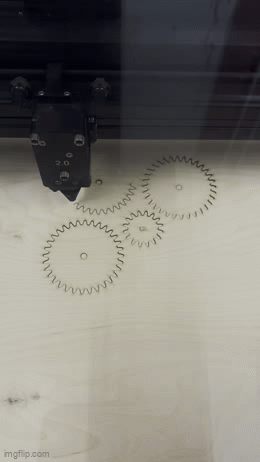

<div class="textcontainer">
<p class="margin"> </p>
<h3>Week 3: Hand Tools and Fabrication</h3>
<p class="margin"> </p>
<h4>Kinetic Sculpture:</h4>
<p class="margin"> </p>
<h2><b><u><i>Spinning Teacup Ride</h2></b></u></i>
<h4> For this project, I found inspiration on youtube and the internet to have gears that spin and move at the same time. Some of the designs/mechanics I saw online reminded me of the teacup ride at the carnival, so I decided to recreate the ride using the functionality I learned online.<h4>
<h6> <b>Find the link to the tutorial <a href="https://www.youtube.com/watch?v=d3qGQ2utl2A&t=38s">here</a>
<p class="margin"> </p>
<h2><b><u><i>Modeling:</h2></b></u></i>
<h4> I first learned how to make gears through a youtube tutorial that taught me how to use scripts. I also learned how to create joints and motion link them -- therefore creating an animation. It helped me envision how the gears would fit together.
<p class="margin"> </p>
<img src="rotating.gif" alt="Flowers in Chania"
width="225"
<p class="margin"> </p>
<h4> I then followed the tutorial and made a 3d gear structure with 4 gears equally distanced from eachother. The center gear controls the movements and the outside of the sturcture has teeth as well, allowing the 3 gears to move freely. I also made a sketch of the teacups through boxes with a handle.
<p class="margin"> </p>
</p>
<h2><b><u><i>Design:</h2></b></u></i>
<h4>I ran into multiple issues making this, especially with my cardboard prototype. I realized the handle in the middle wouldn't work and couldn't figure out a way to attach the motor. However, I figured it out eventually and printed out my sketch in wood. The gears finally lined up and moved accordingly, shown in the video.
<p class="margin"> </p>
<p class="margin"> </p>
<h6><i></p> center gear with hole cut out for gear: <h6></i></p>
<p class="margin"> </p>
<img src="special gear.png" alt="Flowers in Chania"
width="200"
<p class="margin"> </p>
<h6><i></p> printing components + cardboard box; printing</h6></i></p>
<p class="margin"> </p>
<img src="function.gif" alt="Flowers in Chania"
width="200"
</div>

<img src="boxes.png" alt="Flowers in Chania"
width="200"
<p class="margin"> </p>
<p class="margin"> </p>
<h2><b><u><i>Motor function:</h2></b></u></i>
<h4> To motorize the structure, I first hooked up the central gear to a DC motor. I quickly realized the teacups were interfering with the motor function, so I utilized popsicle sticks to raise them above the motor. Then, I hooked up the gear to a power supply and adjusted the current to around 0.26. The gears were able to move nicely after I secured it in the structure. I do wish that the entire structure would've spun and the teacups could've stayed on the ground, so I'll try that for the next iteration. </h4>
<p class="margin"> </p>
<img src="finalteacupproject.gif" alt="Flowers in Chania"
width="200"
<p class="margin"> </p>
<h2><i> Calculations: </h2></i>
<h6> Using a multimeter, I measured out 30 omns for the resistance. The power supply told me I had a 3.5 voltage. <h6>
<h2><b> Omn's law is V = I * R, so to find the current, I = V / R. </h2></b>
<h6> Therefore, the current is 0.116 amps. <h6>
<p class="margin"> </p>
</div>